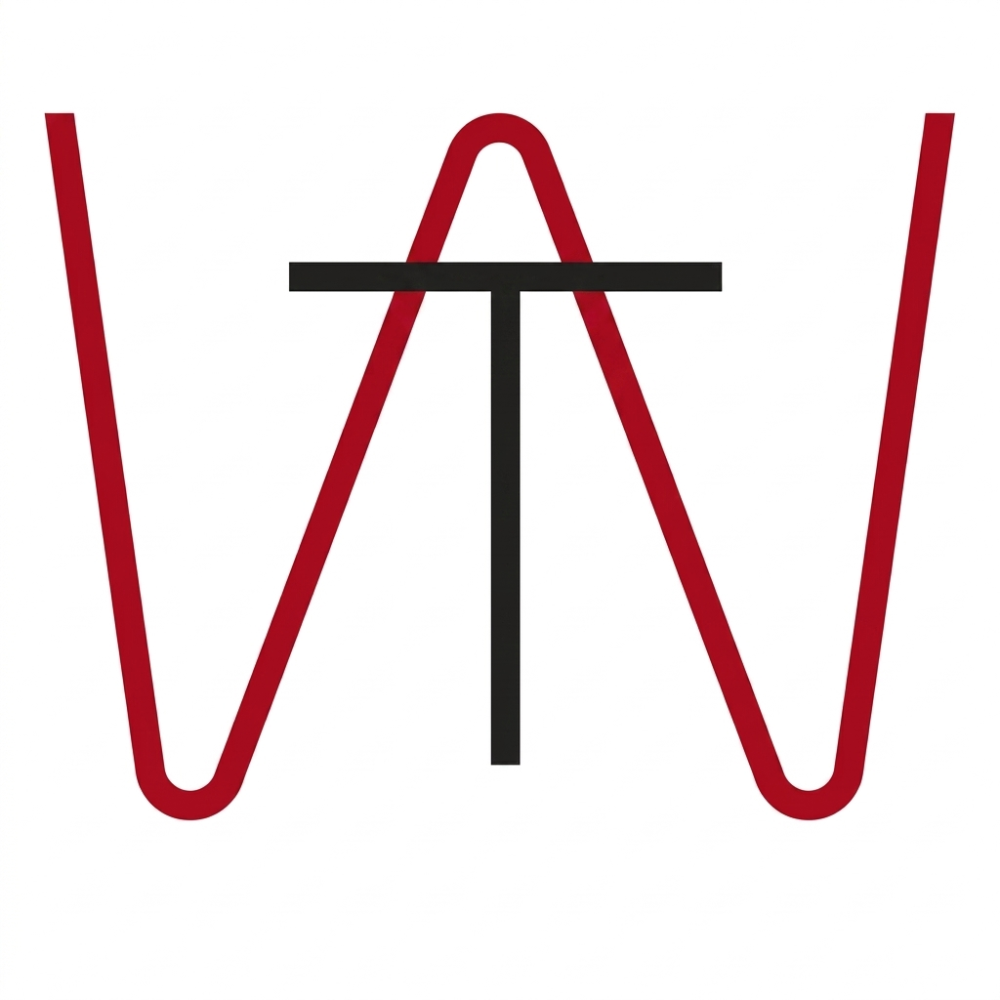

TechWall
Depuis 2019, par 3 enseignants de l'INSAT
Apprends les technos qui comptent, à ton rythme.
Développement web (Symfony, Angular, NestJs, GraphQL), Big Data (Hadoop, Spark) et cybersécurité — TechWall propose des cours gratuits en français, créés par des enseignants-chercheurs de l'INSAT.
{{ stat.value }}
{{ stat.label }}
Explore par catégorie
Tout voir →Cours récents
Tout voir →L'équipe derrière TechWall
Trois enseignants-chercheurs de l'INSAT (Institut National des Sciences Appliquées et de Technologie, Tunis), co-créateurs de la chaîne.
Curieux de savoir qui est derrière la chaîne ?
Découvre l'histoire de TechWall et sa mission : rendre la tech accessible à tous.